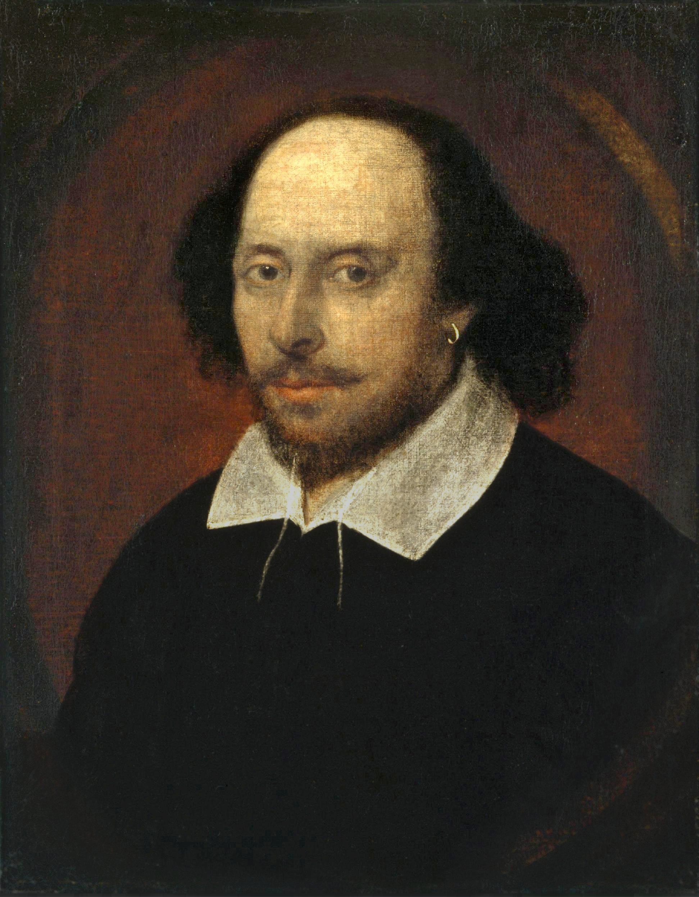

Biography of William Shakespeare

William Shakespeare was an English poet,playwright and actor.he is regarded as greatest writer in the
English language and world's pre-eminent dramatist.he is also known as England's national poet and Bard of Avon
.
Personal Life
Shakespeare was born and raised in Stratford-upon-Avon, Warwickshire. At the age of 18, he married Anne Hathaway,
with whom he had three children: Susanna, and twins Hamnet and Judith. Sometime between 1585 and 1592, he began a
successful career in London as an actor, writer, and part-owner of a playing company called the Lord Chamberlain's Men,
later known as the King's Men. At age 49 (around 1613), he appears to have retired to Stratford, where he died three years later.
Few records of Shakespeare's private life survive; this has stimulated considerable speculation about such matters as his physical
appearance, his sexuality, his religious beliefs, and whether the works attributed to him were, in fact, written by others. Said
theories are often criticised for failing to adequately note the fact that few records survive of most commoners of the period.

Shakespeare's Home
Working Life
Shakespeare produced most of his known works between 1589 and 1613. His early plays were primarily comedies and histories,
and are regarded as some of the best work ever produced in these genres. Then, until about 1608, he wrote mainly tragedies, among them
Hamlet, Othello, King Lear, and Macbeth, all considered to be among the finest works in the English language.In the last phase
of his life, he wrote tragicomedies (also known as romances), and collaborated with other playwrights.
Many of his plays were published in editions of varying quality and accuracy in his lifetime. However, in 1623, two fellow actors and
friends of Shakespeare's, John Heminges and Henry Condell, published a more definitive text known as the First Folio, a posthumous
collected edition of Shakespeare's dramatic works that included all but two of the plays now recognised as his. The volume was
prefaced with a poem by Ben Jonson, in which the. poet presciently hails the playwright in a now-famous quote as "not of an age, but
for all time".
Click for shakespeare's plays list
Ending of Life
Shakespeare died on 23 April 1616, at the age of 52.Shakespeare was buried in the chancel of the Holy Trinity Church two days after his death.
Click to go main page